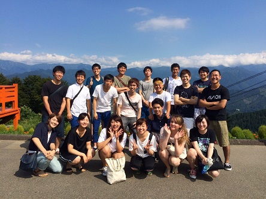

|
[2016年夏合宿 学年別行動]
８月２５日に行われた夏合宿学年別行動の様子をお伝えします。 ５４期や５５期より写真提供を受けましたが、どれもみんな楽しそうでした。 実は学年別行動を前年と大きく変更したのは広報の私…。ただ単に楽しそうかなー なんて思って変えてしまい下見すらしていなかったのですが、後輩たちが 笑顔で楽しんでいる写真を見てきっと楽しく過ごしてくれたのだろうと思います。 救われました（笑）５３期も行きたかったぞ――――――ぃ！！ 説明してもらわなくても分かる「絶対楽しいやつやん」 ５４期はこれ大好きね。 大竹かな？気持ちよさそう。 「写真館が容赦ない」と批判してきたウーロン姫（左）を載せときます。 そのうしろにしがみつきたい…（失言） カートもやったんですか。なんと贅沢な。 よく見て。なんで「けいしちょう」なの？新潟県警じゃないの？ねぇ？ 誰がお祈りしてるのかな？何をお祈りしているのかな？ ウーロン茶とおでこ（暴挙） 
こちらは１女’s。広報は生まれ変わったらソフトクリームになります。 自然の中で羽根をのばしてますね。うらやま。 カメラにサービスしてくれ…前田（５４） もはやカップルにしか見えないゾ… YEAH！愛を叫ぶぜ湯沢！お前だけだぜyou are the one! おそれいりますが そのまま おまちください 佐藤（５５）ってこんなやつだったのか… 広報、今度は温泉に生まれ変わろうと思います。 越後湯沢でスタバに行く意味。 広報は個人的にこういう写真大好きです。 夜は駅周辺で夕食。先輩後輩の「きずな！」は深まったでしょうか。  楽しそう！お疲れさま！良い写真をたくさんありがとう！ 以上で学年別行動は終了です！協力してくれたみんなありがとうございました。 (※写真へのコメントは全て管理人がしております。) |